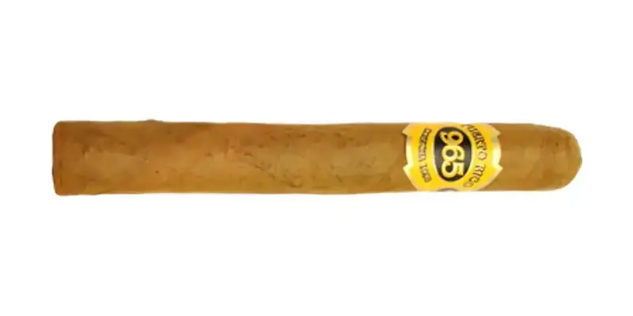

Puerto Rico 965
By JFC Tobacco Corp. / Tabacalera Hoja Boricua · Mayagüez, Puerto Rico
A Puerto Rican cigar from JFC, mild, with a steady cedar flavor and a firm white ash.
- Strength: Mild
- Vitolas: Robusto
See Puerto Rico 965 in the app, rate it and save it to Mi Hoja.